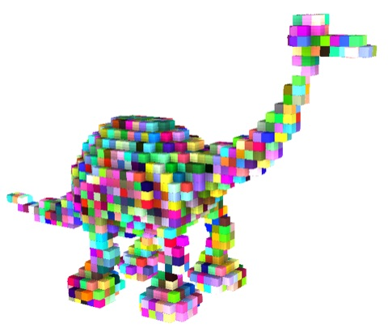
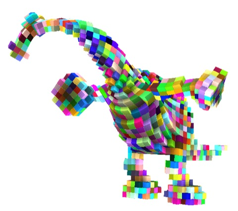
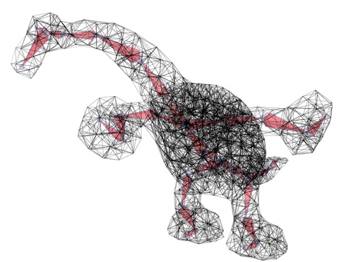
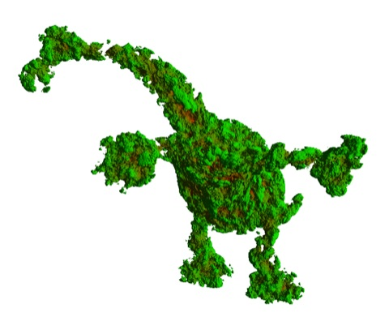
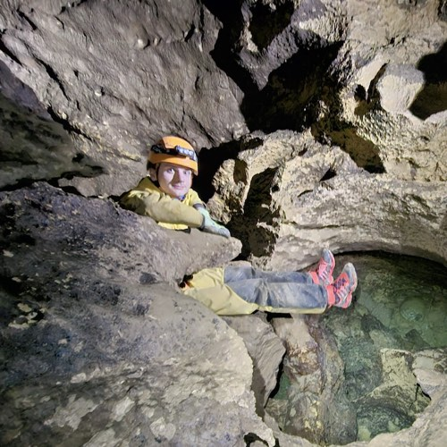
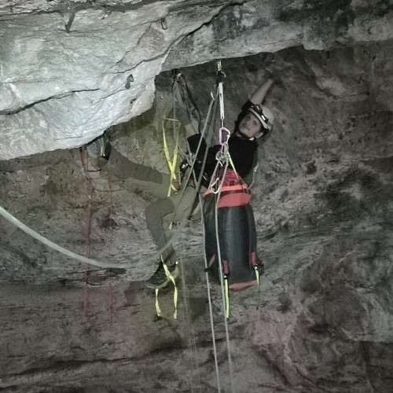

2024 – 2025




Page en construction.


Je suis doctorant depuis septembre 2024 dans l'équipe Maverick au Laboratoire Jean Kuntzmann (LJK) à Grenoble. Je travaille sur le rendu en temps réel.
Je m'intéresse en ce moment aux rayons courbes : plutôt que de déformer la géométrie d'une scène, je cherche à déformer l'espace dans lequel la lumière se propage, en courbant les rayons eux-mêmes, tout en restant compatible avec les contraintes du temps réel.
Cette liste n'est pas forcément à jour : la liste actualisée est sur Google Scholar.





Rendu temps réel d'un trou noir de Schwarzschild et de planètes en orbite, pour mettre en évidence les effets relativistes : courbure de la lumière, effets Doppler, contraction des longueurs, aberration, temps propre. Chaque effet s'active séparément.